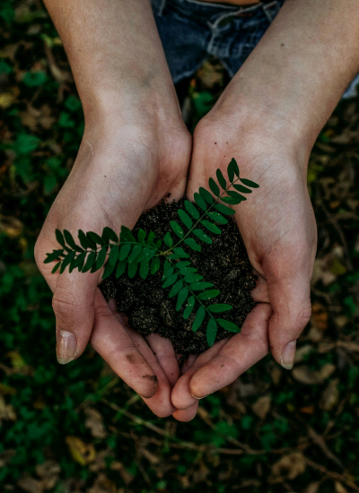
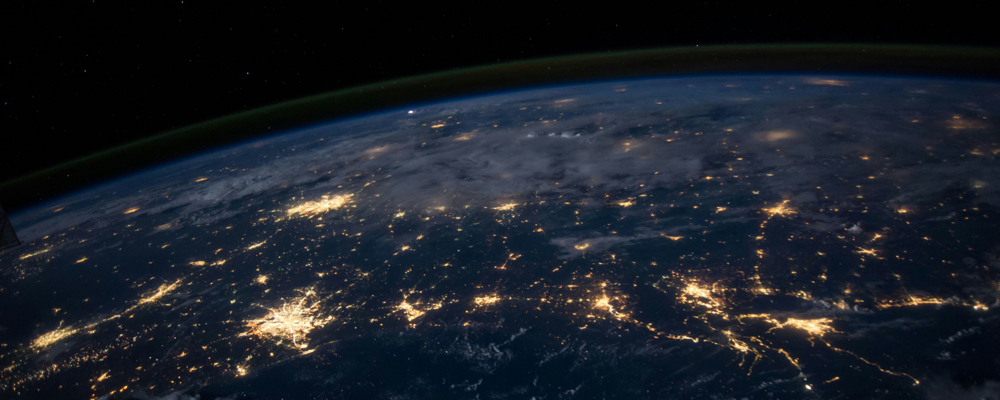

home
> 지속가능경영 > ESG경영
ESG경영
함께 멀리의 철학을 바탕으로 모두의 더 나은 미래를 만들어갑니다.
ESG경영이란?
우리 사회와 지구가 앞으로도 지속가능한 발전을 이어갈 수 있도록 오늘 할 수 있는 일들을 끊임없이 고민하고 실천합니다.
-

- Environment
- 환경 경영 체계 구축
- - 환경리스크 대응 관리
- - 친환경 자산운용
- - 탄소배출 저감 목표 설정 및 관리
-
- Governance
- 투명한 지배구조
- - 기업경영 투명성 제고
- - 감사 독립성 확보
- - 부정부패 척결
-
- Social
- 책임 경영 내재화
- - 사회공헌 확대
- - 인권 및 다양성 존중
- - 제품 안전 감시 철저
한화의 지속가능경영
한화는 현재의 문제를 해결하고 지속가능한 미래를 만들기 위해 환경의 새로운 변화를 만들어가고 있습니다.
- 환경적 지속가능성
- 기후변화와 미세먼지 등 각종 환경 이슈에 직면한 가운데, 산업의 발전과 인류의 삶에 필수적인 에너지를 가장 친환경적으로 제공할 수 있는 방법을 찾습니다.미래에 대비한 친환경 기술과 솔루션을 연구하고 오늘 우리 인류가 당면한 환경문제 해결에 도움을 줄 수 있는 활동들을 펼쳐나갑니다.
- 경제적 지속가능성
- 4차 산업혁명 시대를 대비하여 미래에 필요한 기술을 이끌며 산업과 경제의 지속가능한 발전에 밑바탕이 될 기술 인프라를 구축해 나갑니다. 우주항공·오션·방산, 에너지·소재, 금용, 유통·서비스 사업군에서 사업과 기술 개발,고용 창출을 통해 우리 경제가 경쟁력을 가지고 건강하게 성장해 나갈 수 있는 발판을 마련합니다.
- 사회적 지속가능성
- 사회적 지속가능성 기업 활동이 사회에 미칠 수 있는 영향을 우선적으로 고려하고, 긍정적인 가치와 임팩트를 창출하기 위해 노력합니다. 안정적인 일자리 창출과 인재 육성, 협력업체 동반성장을 통해 지속가능한 사회의 근원적 성장 기반인 인적자원 육성 생태계를 구축합니다.